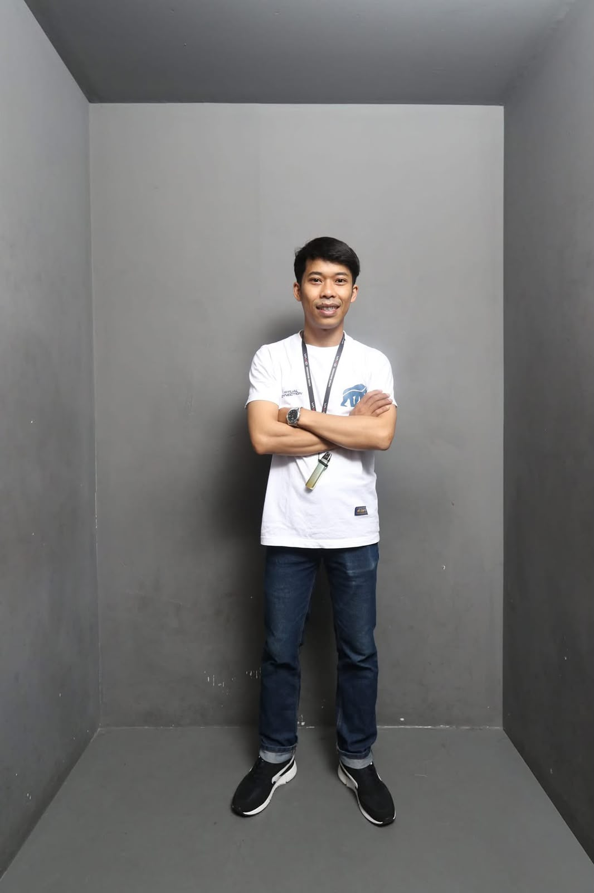
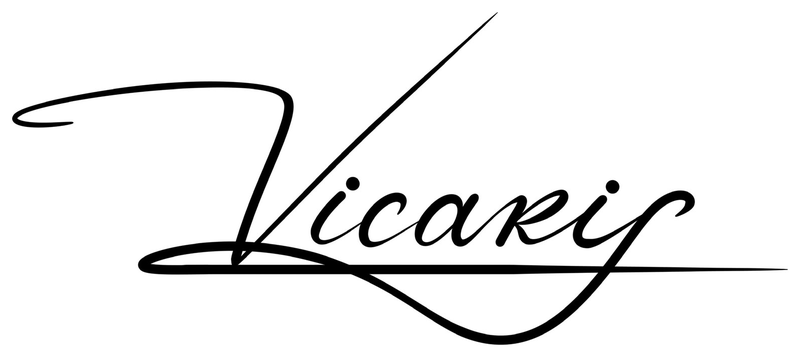
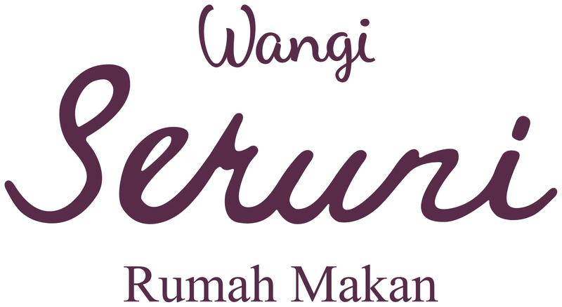
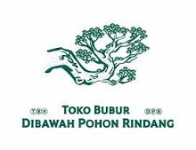
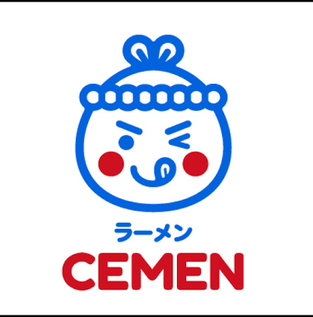
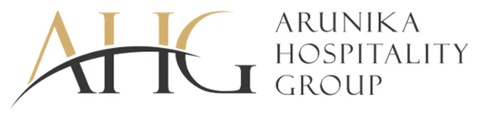
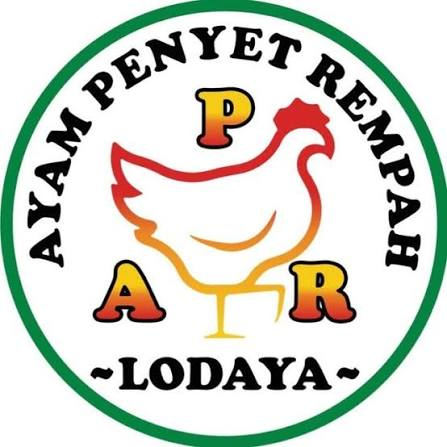
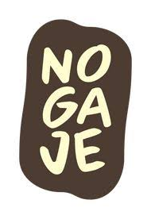
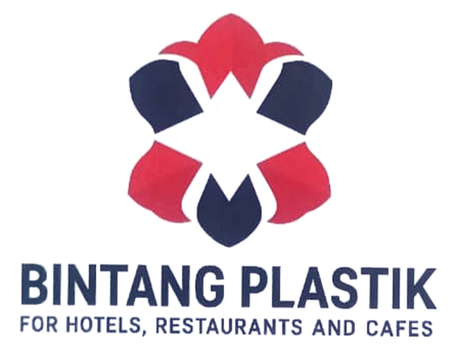
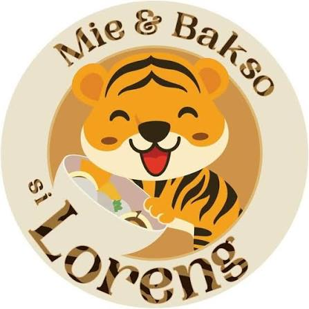

Ayam Penyet Rempah
Pendampingan Pelatihan Karyawan
Pelatihan karyawan agar memahami standar kerja dan alur operasional yang telah dirancang.
Membangun sistem operasional bisnis F&B yang tertib, terukur, dan mudah dijalankan tim, didukung pengalaman manajerial restoran dan latar belakang akuntansi.

Sedang menempuh
S2 Magister Manajemen
Universitas Widyatama
5+
Tahun di bidang akuntansi
5+
Tahun manajer operasional restoran
300+
Pelanggan tetap hotel, resto & kafe
+15%
Laba bersih di atas anggaran perusahaan
Berpengalaman lebih dari 5 tahun di bidang akuntansi dan lebih dari 5 tahun sebagai manajer operasional restoran.
Saat ini fokus pada perancangan sistem operasional bagi klien F&B melalui Vicaris, sekaligus mengembangkan Bintang Plastik, pemasok kebutuhan hotel, restoran, dan kafe di Bandung. Pemahaman atas operasional lapangan dan disiplin pencatatan keuangan menjadi dasar setiap sistem yang dirancang.
Memperdalam manajemen strategis dan tata kelola bisnis untuk memperkuat peran sebagai pembangun sistem operasional.
Landasan keilmuan dalam pencatatan transaksi, penyusunan laporan keuangan, dan perpajakan.
Sistem yang baik lahir dari pemahaman proses lapangan, kontrol keuangan, dan perancangan yang rapi.
Operational System Development
Berperan membangun sistem operasional dan tata kelola bagi klien F&B, mulai dari alur kerja, SOP, hingga struktur pencatatan dan kontrol biaya, lalu mendampingi tim klien agar sistem tersebut berjalan konsisten.

Memetakan dan merancang alur kerja outlet agar setiap peran dan proses jelas.
Menyiapkan dan memandu penggunaan ESB sesuai alur kerja klien.
Menyusun standar operasional dan administrasi serta memastikan penerapannya.
Merancang alur pencatatan transaksi dan mekanisme rekonsiliasi yang dapat diaudit.
Membangun indikator dan pemantauan biaya untuk menekan pemborosan.
Mengidentifikasi kendala dan ketidaksesuaian proses untuk dasar perbaikan.
Melatih dan mendampingi tim klien agar memahami standar kerja baru.
Memantau kinerja beberapa outlet dan klien secara berkala.
Bisnis F&B yang didampingi dalam pembangunan sistem operasional.





Cuplikan pelatihan dan pendampingan karyawan klien di lapangan (format video vertikal).
Pelatihan karyawan agar memahami standar kerja dan alur operasional yang telah dirancang.
Pendampingan langsung agar prosedur diterapkan dengan benar sejak masa pelatihan.
Dua proyek yang sedang berjalan, dengan fokus membangun fondasi sistem operasional dan tata kelola agar bisnis dapat bertumbuh secara terstruktur.
Kolaborasi yang sedang berjalan dengan fokus pada perancangan sistem operasional, standar kerja, dan alur pencatatan.

Pendampingan yang sedang berjalan dalam membangun sistem operasional dan tata kelola yang rapi sejak tahap awal.
Cuplikan proses pendampingan setup sistem operasional di lapangan (format video vertikal).
Perkembangan pendampingan setup sistem operasional dan standar kerja tim di lapangan.
For Hotels, Restaurants and Cafes
Turut mendirikan dan mengembangkan Bintang Plastik, penyedia kebutuhan kemasan bagi pelaku hotel, restoran, dan kafe, dengan fokus pada pelayanan pelanggan tetap di wilayah Bandung.
300+
Konsumen tetap khusus Bandung
Hotel · Resto · Kafe
Segmen pelanggan utama


Mie & Bakso Si Loreng · Bandung
PT. Aroma Kuliner Nusantara · Bandung
Menyusun laporan keuangan berkala dan menganalisis laporan keuangan untuk perencanaan keuangan jangka pendek.
CV. Abu Dawood · Al-Baek Resto & Café, Bandung
Menyusun laporan keuangan berkala, memberikan arahan kepada karyawan, dan memastikan operasional berjalan sesuai SOP.
PT. Awang Jasareka · Bandung
Menyusun perencanaan pelaporan pajak klien, melaporkan e-SPT ke KPP terdaftar, serta membimbing klien terkait perpajakan.
PT. Ria Indah Mandiri · Bandung
Memeriksa barang masuk dan keluar serta menjaga kerapian barang dan area gudang.
Untuk kebutuhan pembangunan sistem operasional bisnis F&B atau kerja sama pasokan kemasan, silakan hubungi saya.
Bandung, Jawa Barat · +62 877-3666-5704